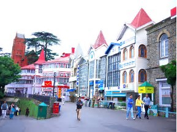

|  |
One place that you cannot ignore is definitely the Mall Road in Shimla. Located at the heart of the town, the Mall Road in Simla is one of the busiest commercial areas of this place. Built by the British during the colonial rule in India, the Mall Road was constructed keeping in mind the traffic on this route. Entry of vehicles was banned though cycle rickshaws were allowed. It has been built in a very strategic and planned way.
|